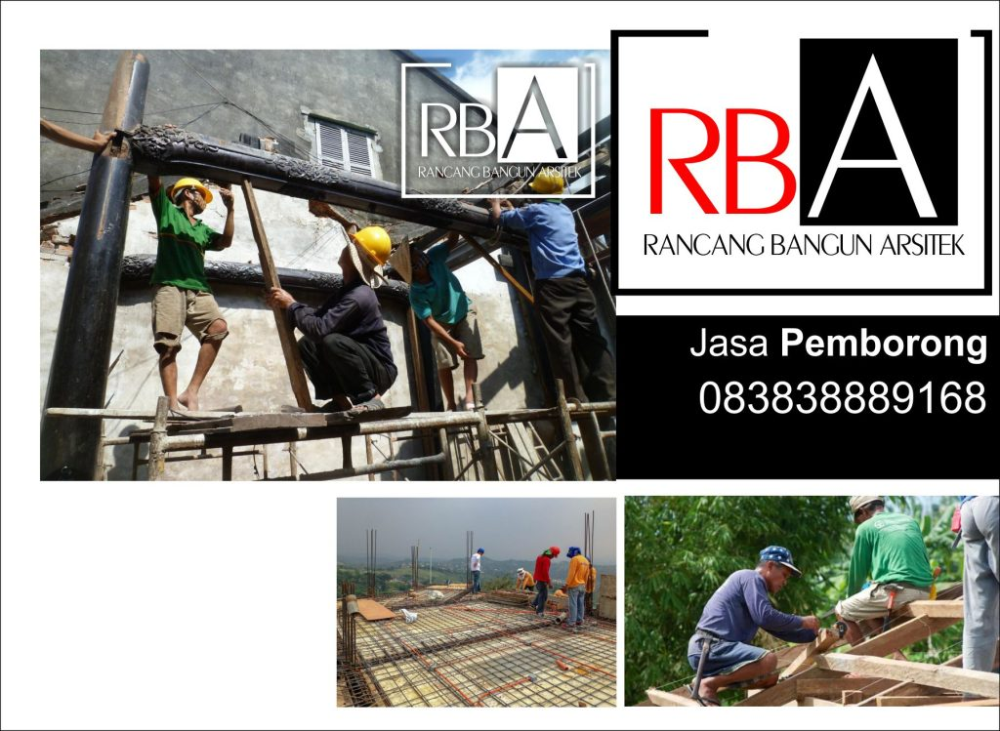

Kami menyiapkan Jasa Pemborong Bangunan di dengan tenaga ahli bisa dipercaya untuk Anda.
Jasa Pemborong Bangunan
Dapatkan Jasa Pemborong Bangunan terbaik disini
Rancang Bangun Arsitek hadir melalui pelayanan Desain, Pemborong dan Renovasi Handal yang melayani Jasa Pemborong Bangunan . Menggunakan Jasa Pemborong Bangunan untuk beragam keinginan misalnya desain Bangunan minimalis, desain Bangunan minimalis modern, desain Bangunan minimalis sederhana sampai desain Bangunan modern pasti memerlukan tenaga ahli di bidangnya. Kebutuhan supaya memiliki Bangunan yang menarik adalah salah satu hal yang tidak boleh dilupakan saat Kamu akan membangun tempat yang nyaman seperti dengan impian. Standar Ongkos Jasa Pemborong Bangunan ditentukan oleh besaran Bangunan hingga sejak awal bisa ditentukan dari luasan lokasi dan kebutuhan ruang Anda. Item-item Jasa Pemborong Bangunan yang ditawarkan tercatat jelas tidak ada yang disamarkan. Kami ada untuk memberi Anda akan tenaga ahli dalam Jasa Pemborong Bangunan dengan hasil paling baik. Temukan Jasa Pemborong Bangunan pilihan yang cocok dengan kepentingan Anda. 


Beberapa Jasa Pemborong Bangunan yang biasa dikerjakan
- Jasa Pemborong Kafe Restoran
- Jasa Pemborong Interior
- Jasa Pemborong Flat Apartemen
- Jasa Pemborong Kos-kosan
- Jasa Pemborong Ruko
- Jasa Pemborong Rumah
- Jasa Pemborong Kantor
- Jasa Pemborong Furniture
Dukungan Teknologi Bangunan
Salah satu bagian penting dalam membangun Bangunan adalah desain. Penyajian 3d Bangunan merupakan bagian dari perancangan dan sebagai sebuah gambaran seperti apa Bangunan yang diinginkan. Rancang Bangun Arsitek dengan Software 3D Design & Render kami tawarkan untuk menampilkan model Bangunan yang mendekati realitas. Visualisasi membantu Jasa Pemborong untuk menghasilkan Bangunan yang klien inginkan. Tampilan 3D visual kelihatan lebih realistis hingga andai ada kekurangan, revisi atau butuh perbaikan maka gambar teknis dan 3D design jadi lebih mudah direvisi. 


Kelebihan menggunakan 3D Bangunan
- Visualisasi langung
- Lebih mudah mengatur bentuk
- Lebih mudah revisi
- Lebih mudah menata ruang
- Lebih mudah memilih material
- Lebih mudah memilih warna
Terbaik Jasa Pemborong Bangunan
Terkemuka dengan tukang berpengalaman serta tenaga profesional yang dapat Anda percaya. Saat membutuhkan membuat konstruksi, menggunakan jasa pemborong yang berpengalaman merupakan opsi terbaik. Ongkos Jasa Pemborong Bangunan terbaik dan bersahabat, konsultasikan pada kami dan kami siap membangun dan merenovasi Bangunan Anda sebagai hunian masa kini, nyaman dan berkarakter sesuai dengan keinginan. Sisi Jasa Pemborong pun bisa jadi partner Kamu dalam konsultasi mengenai material Jasa Pemborong . Kami berusaha menciptakan desain Bangunan sesuai keinginan Anda dengan kualitas rapi dan biaya kompetitif untuk kebutuhan Jasa Pemborong Bangunan . Kami berusaha menciptakan design sesuai impian Anda oleh mutu rapi dan biaya kompetitif.


{kind=link}

{kind=link}
Kami Juga Menyediakan Lengkap untuk Bangunan
- Pengawas
- Mandor
- Surveyor
- Tukang
- Material
- Jasa Desain
- Arsitek
Memilih Jasa Pemborong Bangunan
Jasa Pemborong Bangunan adalah termasuk penyedia layanan konstruksi yang mempergunakan metode borongan dalam kalkulasi harga pekerjaannya. Selain menggunakan jasa konstruksi, mengandalkan jasa pemborong bangunan merupakan cara populer saat membangun tempat tinggal dengan biaya teratur. Pemborong mempunyai pengalaman yang banyak tentang Bangunan dan selalu dijadikan opsi dalam membangun Bangunan. Saat berbicara keperluan membangun , umumnya pekerja borongan adalah yang paling sering dibutuhkan. Keberhasilan Jasa Pemborong dilihat dari pengalaman dan sumber daya pekerjanya, kami menyediakan sumber daya yang berkopeten dan berpengalaman.. Jika Kita tidak punya rancangan sendiri atau tidak tahu detail dari rancangan Bangunan yang Anda inginkan, Jasa Pemborong dapat membantu Kamu. Ada tiga pilihan yang dapat anda pilih ketika membangun Bangunan, memakai jasa kontraktor, pemborong, atau membangun sendiri. Tenaga Jasa Pemborong Bangunan kami terdiri dari bermacam tenaga berpengalaman yang sedia menghasilkan Bangunan impian Anda sesuai dengan keahliannya. Salah satu tips membangun Bangunan dengan murah yaitu menggunakan Jasa Pemborong. 


Keuntungan memakai kami untuk Jasa Pemborong Bangunan
- Menyediakan Petunjuk dan Bantuan untuk Rancangan Desain Bangunan
- Waktu Pengerjaan Jadi Lebih Terukur dan Cepat
- Memberikan Ide dalam Pemilihan Material untuk Bangunan